ONE DROP INTERACTIVE
About The Project
One Drop Interactive is a company that provides employee sustainability education while simultaneously collecting data about workspaces and department practices to reveal areas for cost and environmental savings. The current cloud-based platform combines e-learning modules with a gamified experience where employees are grouped into teams and compete for prizes.
We were tasked to create the UX for a mobile application (iOS) that synces to their current desktop-only platform so employees can learn (and earn points) on the go... all within a 14 day timeframe.
Our Solution...
An Experience that Excites
We ended up creating a mobile experience that is an extension of the current platform, but not a direct reflection of it Taking advantage of the mobile context, the new app broadens the gamification aspects of the desktop version and extends the team challenges into the mobile sphere, allowing users to enter data and earn points on the go.
Education in Trivia Clothing
A delightful educational experience that just feels like fun.
Multiple Ways to Earn Points
Taking into account our stakeholder's request, we created a photography feature where users can record unsustainable practices around the workplace

Keep Track of Progress on the Go
Taking into account our stakeholder's
Check out our Interactive Prototype
- - - - - - - - - - - - - - - - - -
And Now Learn About How We Got There...
Project Overview
One Drop Interactive needs a mobile platform that can be used in conjunction with the current desktop program.
Features, Please
Must Have: Allows users to continue to earn points away from their desktop.
Nice to Have: (1) A photo-reporting feature to record wasteful behaviors in the office (lights on all night, leaky faucets..) (2) A geo-based rewards program.
My Team
For this project, I was lucky enough of working with Alyse Gilbert, Evangeline Hsiao and Tiffany Koh
My Role
Ideation, Interview, Market Research, CCA, Business Canvas, Personas, Site Map, Sketches, Low-Fidelity Wires, Categories Page, High Fidelity Prototype
Tools
- - - - - - - - - - - - - - - - - -
Business Canvas Model
To make sure that we kept One Drop's existing business model in mind during the entire ideation and design process, we created a Business Canvas Model. This visual chart depicts the company's value proposition, infrastructure and customer needs.

- 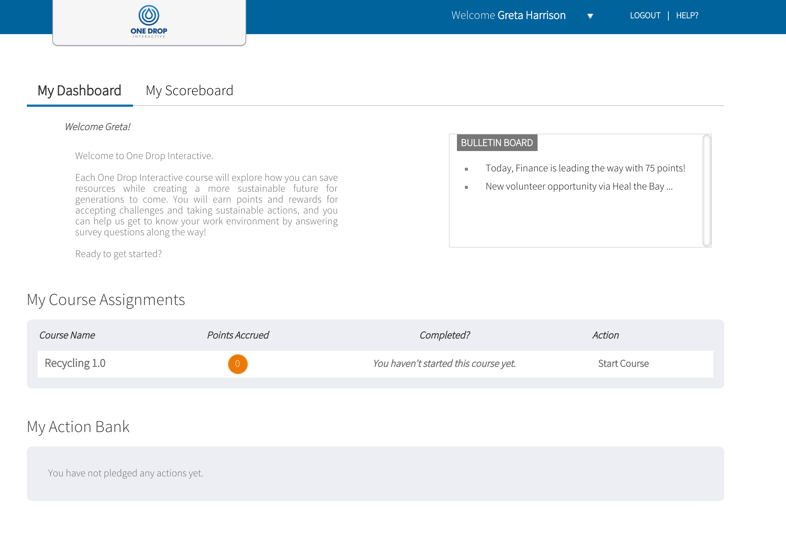
- 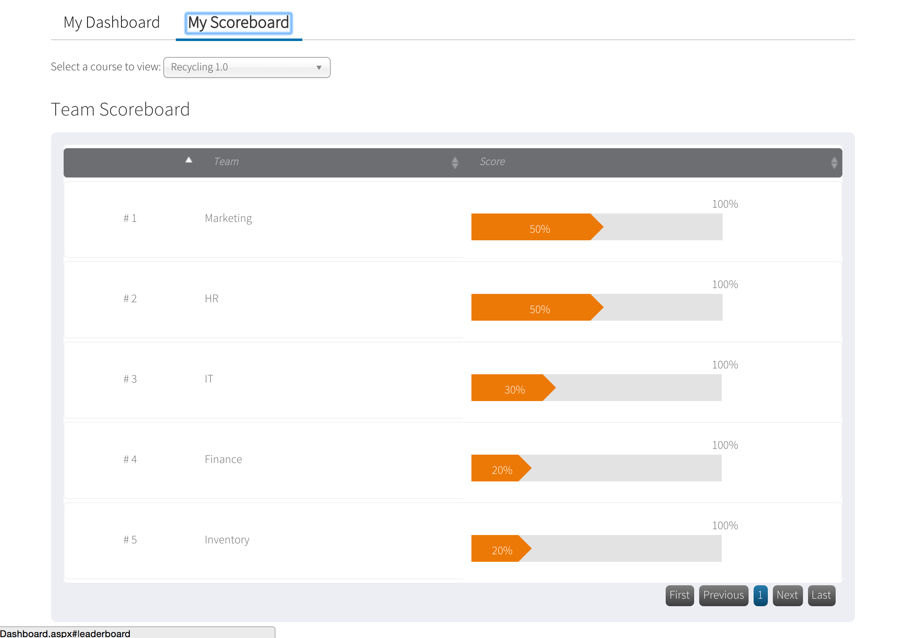
- 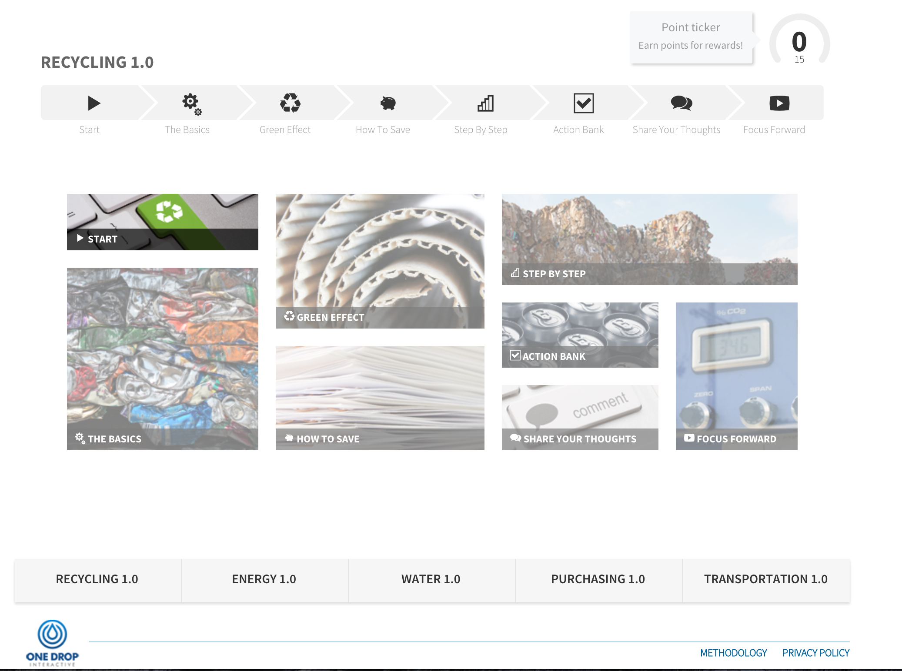
- 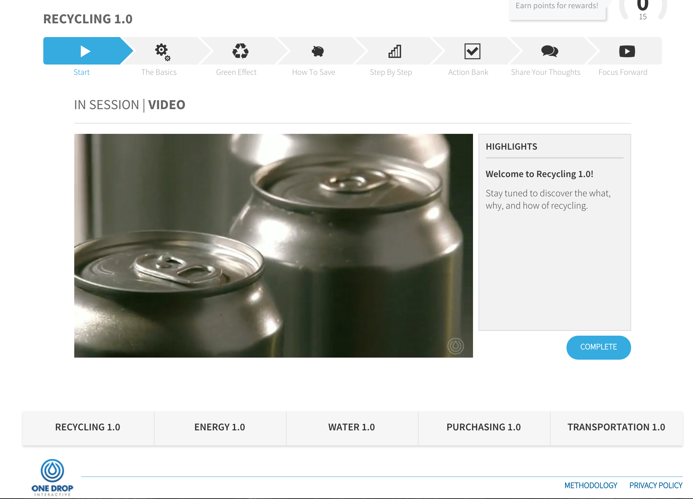
- 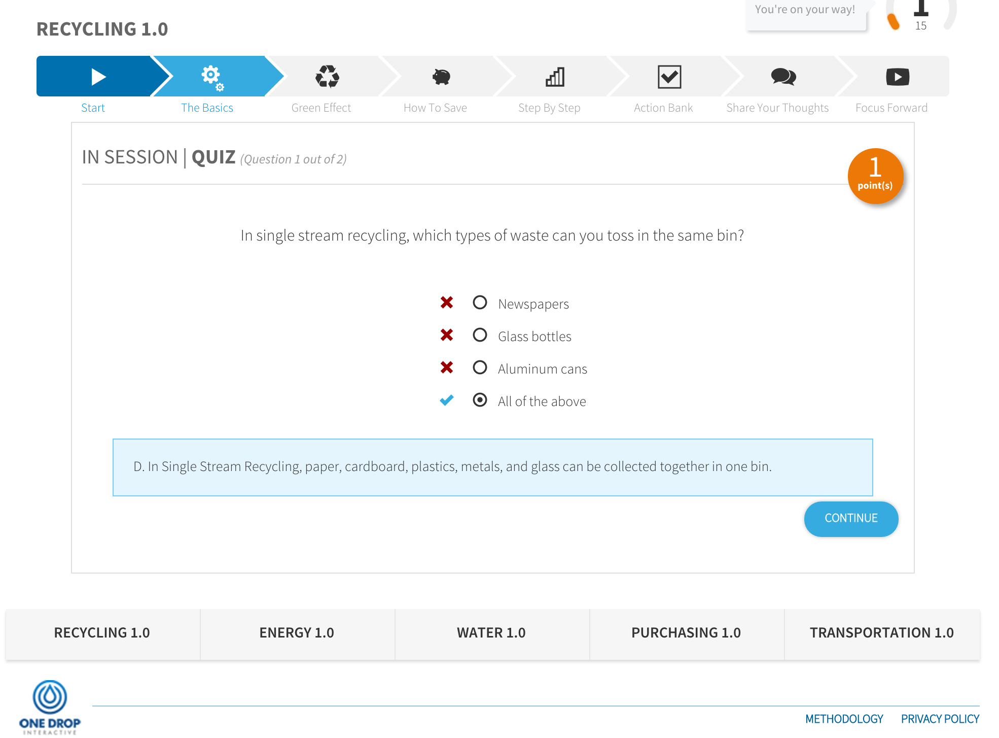
- 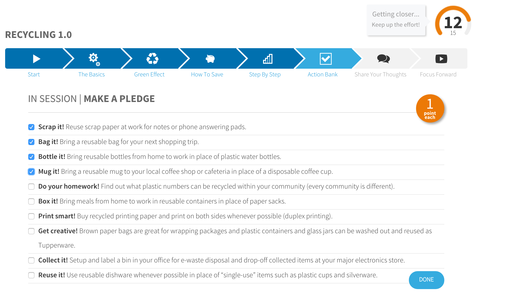
Analyzing Current Platform
We also spent some time on One Drop's desktop platform, going through the current user flow. The current flow requires users to watch videos, take a quiz related to the video, conduct a brief survey and then make an environmentally friendly pledge.
During this task analysis, we started to realize that directly translating the desktop experience to mobile benefitted neither the stakeholder nor the users. We would be unable to seamlessly integrate the features One Drop specifically requested into the existing flow, and we would also be unable to create an intuitive and enticing mobile experience for users utilizing the existing content.
Comparative Competitive Analysis
We spent 3 of our 14 days researching mobile best practices and we created Comparative Competitve Analysis' on mobile apps with similar features to what we our stakeholder was looking for. We focused on well-liked edTech, Gaming and Photography apps.
- 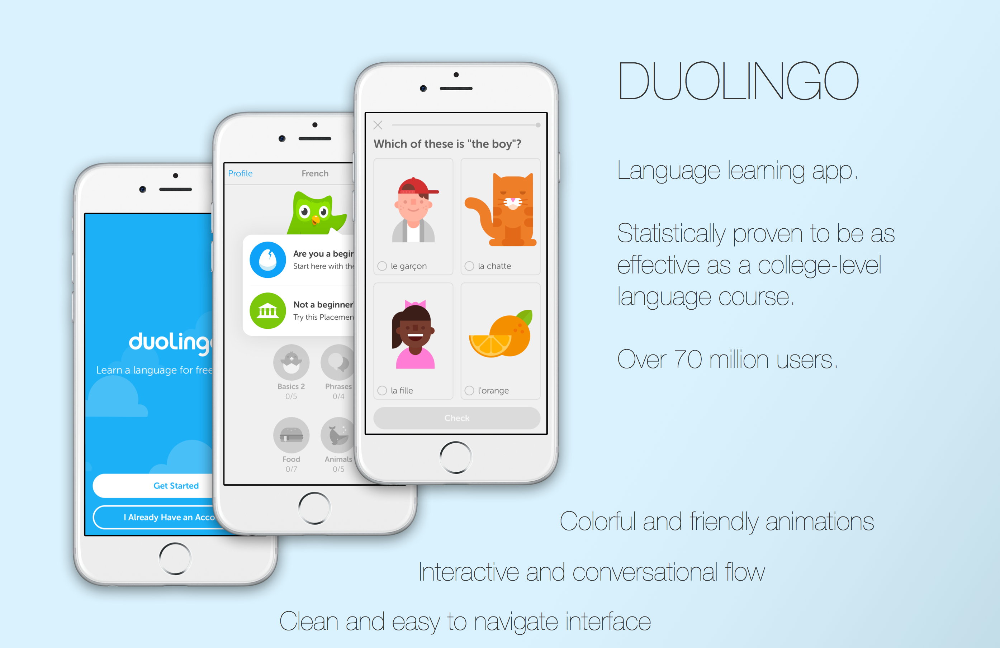
- 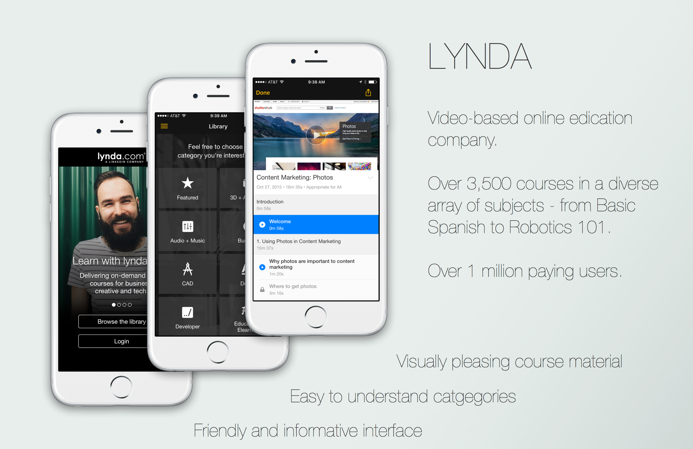

- 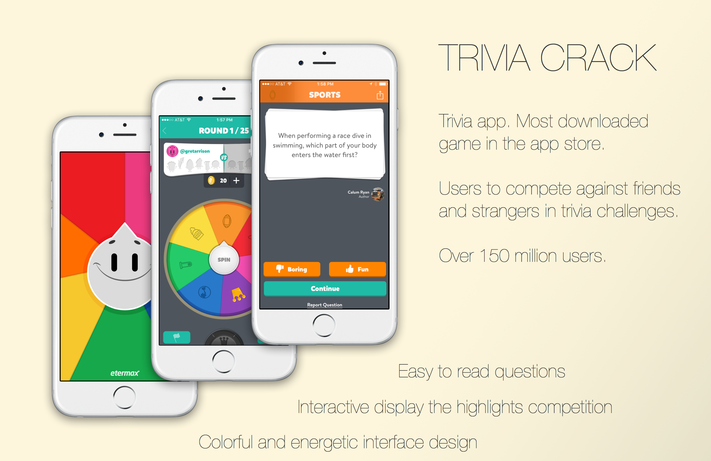

- 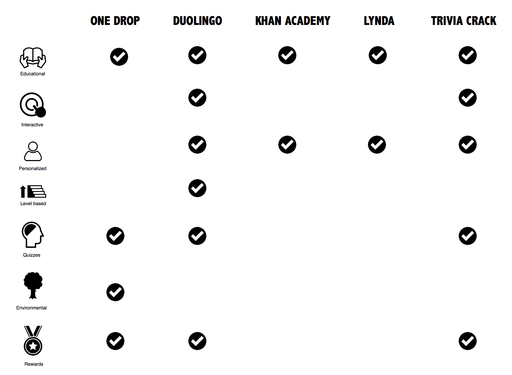
User Research
Before we dove deeper into research and ideation, we needed to examine current user behavior. We created a survey that focused on gaining insight on behaviors and opinions towards E-Learning. We initially hoped to survey current One Drop Interactive users so that we could compile specific data points related to E-Learning in the workplace with an even more specific sub-category of environmental sustainability. Unfortunately due to non-disclosure agreements with companies using the platform, we did not have access to this specific userbase nor any demographic information on them.
Creating a user-centered design without access to users posed a unique challenge for us as a team. We had to approach the UX process from a completely different angle, as a result, our focus on market research and user-testing intensified.
- 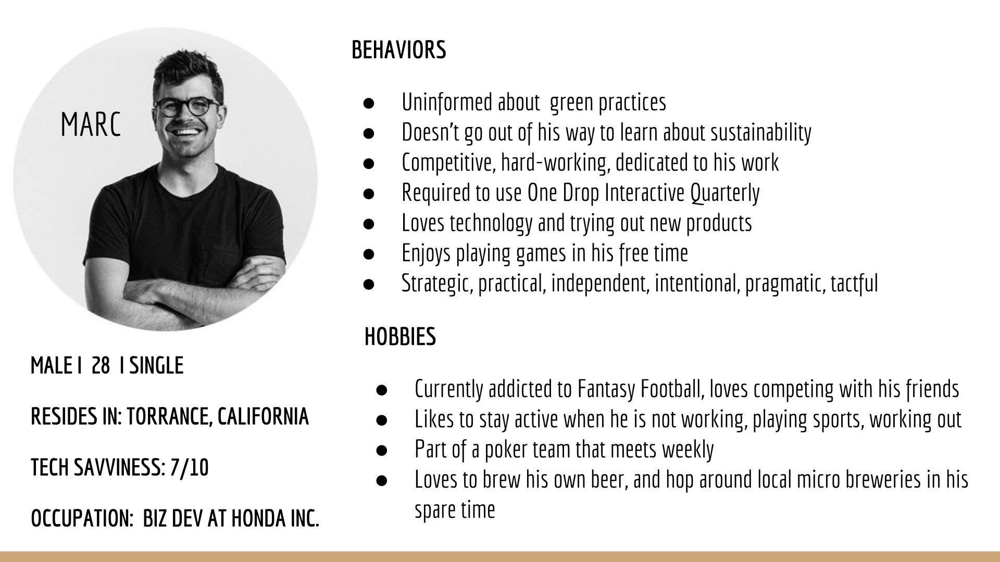
- 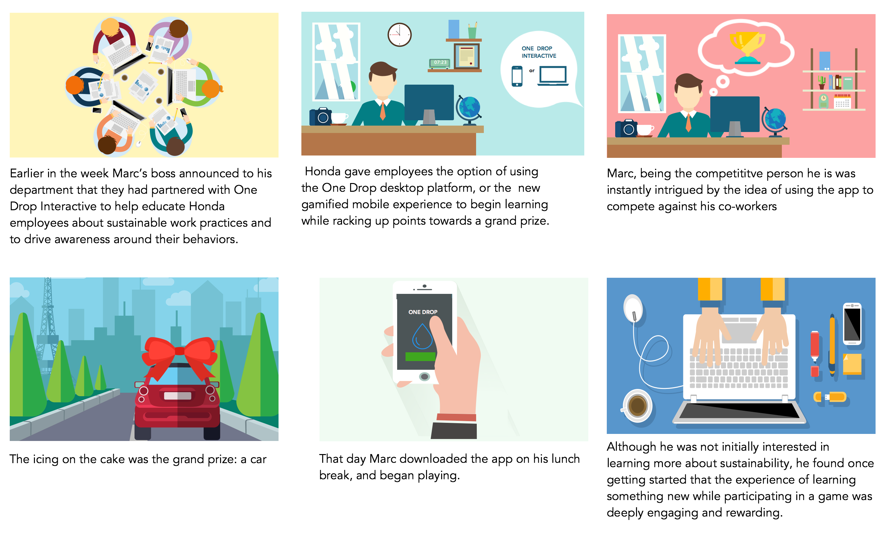

- 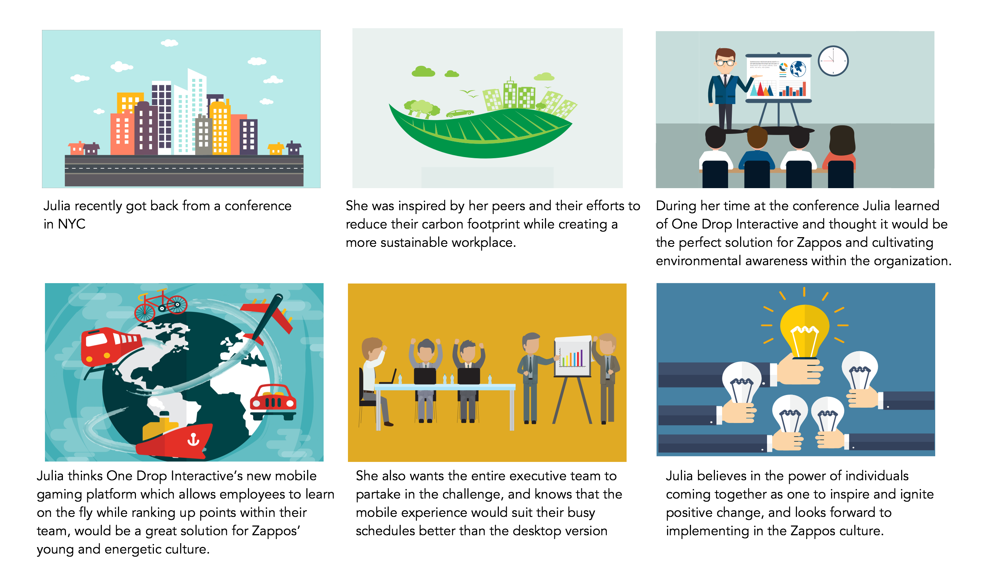
- 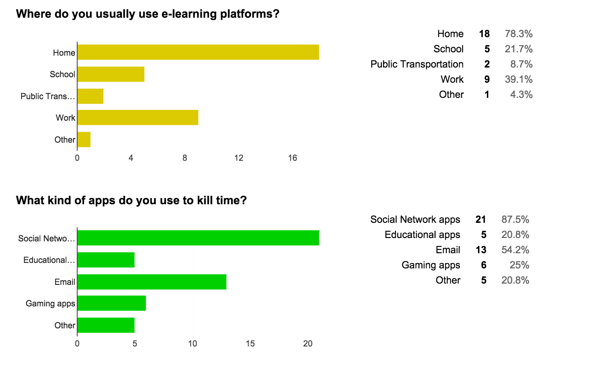
- 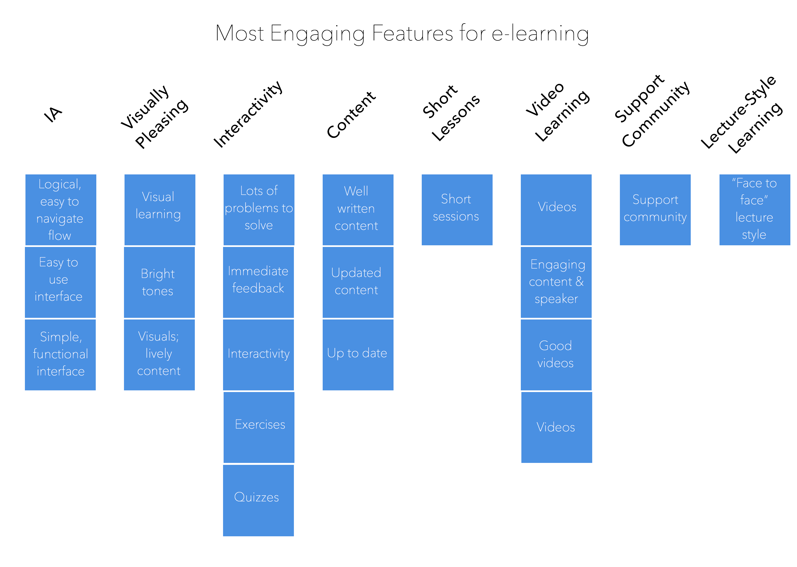
Personas
Based off of heuristic evaluation, research and the demographics from our survey, we came up with three unique personas
Storyboards
Instead of traditional text-only scenarios, we created storyboards to visually empathize with Marc and Julia.
Proposed Sitemap
Laying out the information architecture of the mobile experience allowed us to to get a handle on the volume and complexity of the content, and determine what screens were essential in our user flow.
User Flow
With the Site Map and our Personas in mind, we created a User Flow.
Sketches
Paper Prototype
Low-Fidelity Wireframes
Validating MVP With User Testing
Style Guide
High-Fidelity Prototype
Interactive Prototype
Once our prototype was complete, we pulled the pages into InVision to make it interactive. Check it out here.